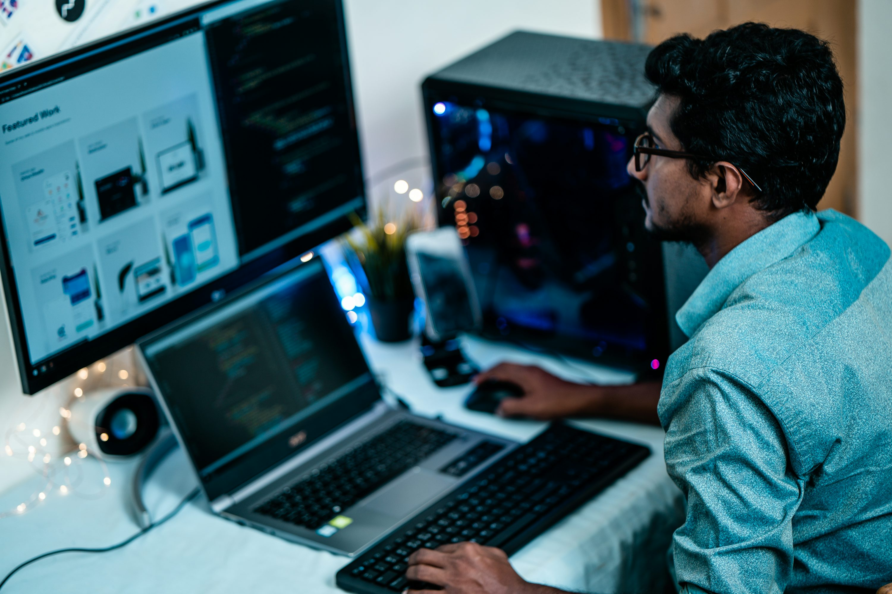

Favourite Hobbies
- Video Games
- Art
- Computer
- Outdoor Activities
- Go-karting
- Pool/ Snooker
Video Games have always been a very keen interest of mine and a great way for me and my friends to spend time together. I enjoy playing a wide variety of games. However, my favourite genres are first person shooters, competitive shooters, and strategic shooters. These three game categories include my three favourite games: Valorant, Rainbow Six Siege, and Counter Strike. For me, playing games is a great way to unwind, relieve stress, and connect with others online.


Art is a great form of expression that I find both relaxing, and rewarding. I enjoy working with different mediums, however my favourite are definitely digital art and sketching. Most of the time, my inspiration comes from apps like Pinterest, and I love to experiment with colours, textures, and techniques to differ from the original inspiration. Creating original art is something I find difficult, with no inspiration. I find it rather interesting how others can easily translate their emotions and feelings to their artwork.
I've always had an interest with computers, and enjoy spending timee learning and experimenting with different things regarding computers, like stretching applications limits, building PC's, fixing mobile phones, etc. My curiosity has led me to eexplore device repair from a very young age. I used to post advertisements on DoneDeal in 2017, wheen I was 12 yeears old to fix phone screeens for 50% of the price repair shops offer. I loved doing that.